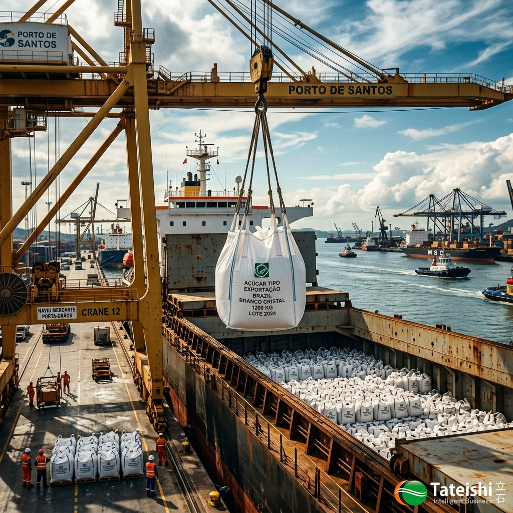

Agrícola 40% do Mercado GlobalAçúcar (VHP, ICUMSA 45, ICUMSA 150)
O Brasil é o maior produtor e exportador mundial de açúcar, respondendo por cerca de 40% do comércio global. O país domina especialmente o mercado de açúcar VHP (Very High Polarization), açúcar bruto de alta polarização usado como matéria-prima para refino em outros países.
Classificação & Graus
Principais Compradores:
China, Bangladesh, Indonésia, Argélia, Nigéria e países do Oriente Médio.
Curiosidade & Dinâmica de Mercado:
O Brasil produz açúcar e etanol a partir da mesma matéria-prima (cana-de-açúcar), e a escolha entre destinar a safra para um ou outro depende do preço internacional do açúcar em relação ao petróleo — dinâmica que impacta diretamente a oferta global.